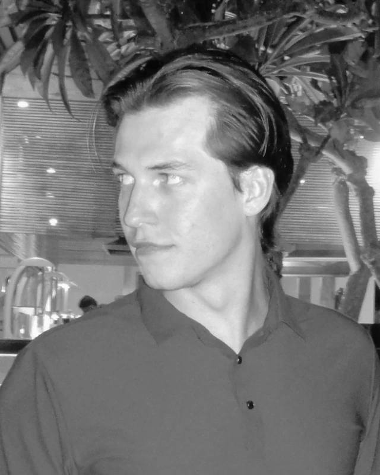

Eugene Chavkin
3D Artist / 3D Generalist

About me
I’ve been making 3D models since childhood. It started with a dream of making my own games. While still in school, I started selling models on asset marketplaces, learned from working artists, and took 3D courses. I went on to learn Unity and Unreal Engine 5, import my models, and build game projects with them.
After school, I trained as a CNC machine operator to turn my interest in 3D into a career. During my training, I prepared models for manufacturing. In my first engineering role, I modeled components for gas dynamics applications.
I wanted to do more with the artistic side of 3D, so I moved into product visualization. At Kuppersberg, I model home appliances from measurements and create both studio and interior renders. My primary software is listed under Skills and tools. I pick up new tools quickly on the job, as I did with Cinema 4D and Redshift. I have extensive experience using AI, starting with my own projects. Since we introduced it at work, I’ve been helping colleagues learn to use those tools.
Skills and tools
- Game assets
- Hard-surface, high-poly and low-poly modeling, retopology, UV unwrapping, map baking, and PBR texturing. 3ds Max, Maya, ZBrush, RizomUV, Substance 3D Painter, and Marmoset Toolbag 4.
- CAD modeling
- Autodesk Fusion 360 and SolidWorks. Modeling from measurements and drawings, and preparing models for 3D printing.
- Visualization
- 3ds Max with Corona and V-Ray, Cinema 4D with Redshift, Adobe Photoshop, and DAZ Studio.
- Game engines and video editing
- Unity and Unreal Engine 5. Basic editing in After Effects and Premiere Pro.
- AI agents
- I use AI agents for 3D work, video editing, and game prototyping.
Education
Moscow Academy of Entrepreneurship
Currently studying
Bachelor’s program in Design.
Zh. Ya. Kotin Academy of Mechanical Engineering
2021
Vocational qualification as a CNC machine operator.
Work experience
Kuppersberg
January 2024 — Present
3D Modeler and Visualization Artist
I model home appliances in Fusion 360 from measurements of physical samples. I set up materials, lighting, and cameras in 3ds Max and Cinema 4D and create images for product listings and interior scenes.
Product Visualization case studyMOTORCITY
July 2022 — November 2024
3D Modeler
I modeled components and assemblies from sketches, drawings, and specified dimensions. I prepared 3D models for manufacturing and printing.
Engineering and CAD Modeling case studyUnity Asset Store
January 2019 — Present
Independent Game Asset Creator
I create and sell 3D models for Unity game projects.
Languages and availability
Russian: native. English: B1.
Open to full-time on-site, remote, or hybrid work. Available for business travel.